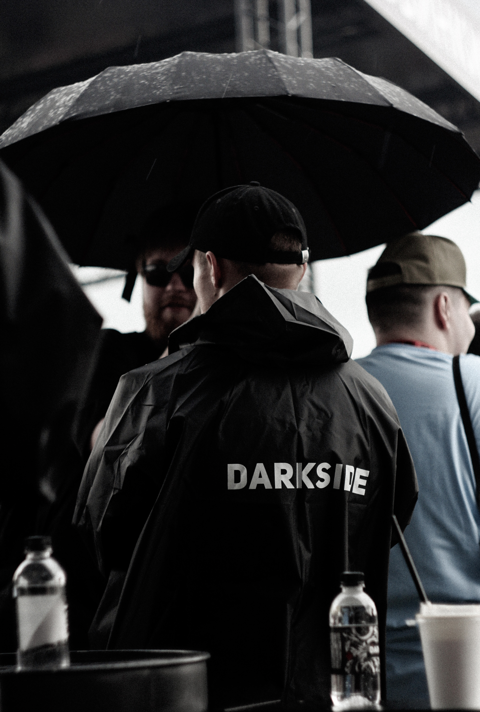

Photographer · Belgorod
Фотограф
Игорь Мирный
Привет! Я Игорь Мирный, фотограф из Белгорода. Создаю фотографии с настроением, характером и атмосферой. Люблю винтажную эстетику, живые эмоции и моменты, которые хочется сохранить
Репортажная съёмка
События, люди и настоящие моменты

Индивидуальные фотосессии
Характер, настроение и личные истории


Обо мне
Ловлю моменты, а не позы
Мне интересны живые эмоции, детали и атмосфера. В каждой съёмке стараюсь сохранить не просто изображение, а ощущение момента.